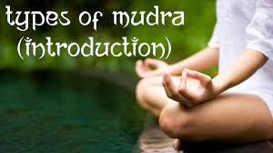
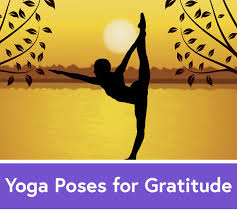
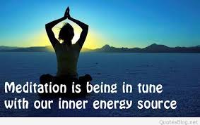
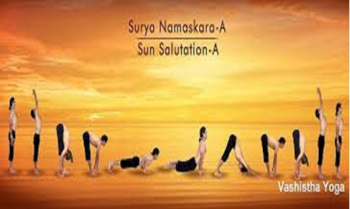

About Yoga
Yoga is an old discipline from India. It is both spiritual and physical. Yoga uses breathing techniques, exercise and meditation. It claims to improve health and happiness.Yoga is the Sanskrit word for union.Patanjali was a pioneer of classical yoga. He defined yoga as "the cessation of the modification of the mind".
A yogasan is a pose in which a man can sit. The intention of yogasan is to exercise the body and making it free of pains and problems.Yogi is a person who has mastered yoga or has achieved great success in yoga. Yogasanas are also called as Asan or Asanas (plural). A Yogi can sit in any asan for a given time.
Types of Mudras
A mudrā is a spiritual gesture and an energetic seal of authenticity employed in the iconography and spiritual practice of Indian religions. One hundred and eight mudras are used in regular Tantric rituals.Mudras are used in conjunction with pranayama (yogic breathing exercises), generally while seated in Padmasana or Vajrasana pose.
Learn moreAsanas
Asana is defined as “posture or pose;” its literal meaning is “seat.” Originally, there was only one asana– a stable and comfortable pose for prolonged seated meditation. More than just stretching and toning the physical body, the yoga poses open the nadis (energy channels) and chakras (psychic centers) of the body.
Meditation
Meditation is a is a state of deep peace that occurs when the mind is calm and silent.It is often used to clear the mind and ease many health concerns, such as high blood pressure, depression, and anxiety. It may be done sitting, or in an active way—for instance, Buddhist monks involve awareness in their day-to-day activities as a form of mind-training.
Sun Salutation(Surya Namaskar)
Benefits Of Sun Salutation
Surya Namaskar or Sun Salutation is a very ancient technique of paying respect or expressing gratitude to the Sun that is the source of all forms of life on the planet.Now just knowing how to do Surya Namaskar is not enough. It is also important to understand the science behind this very ancient technique, because a deeper understanding will bring forth the right outlook and approach towards this very sacred and powerful yogic technique.